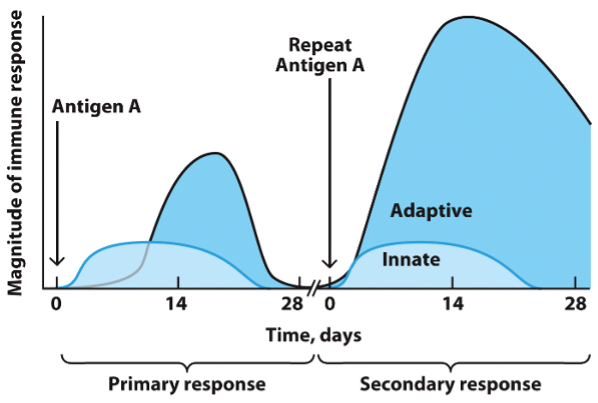

The immune system recognizes and responds to diverse pathogens using innate and adaptive strategies. This workbook explores key concepts behind pathogen classification, immune activation, and immunologic memory.
Complete the table below by identifying key structures, typical location in the host (e.g., intracellular, extracellular, or intravesicular), mechanism of pathogenesis, and provide an example organism for each type.
| Pathogen | Identifying Structure(s) | Location in Host | Mechanism of Pathogenesis | Example |
|---|---|---|---|---|
| Virus | ||||
| Bacteria | ||||
| Fungi | ||||
| Parasite |
The steps below are out of order. Please assign a number (1–6) in the input box next to each step to reflect their correct sequence in a typical immune response.
Compare the two arms of the immune system by completing the table.
| Feature | Innate | Adaptive |
|---|---|---|
| Response Time | ||
| Specificity & Diversity | ||
| Response to Repeat Infection | ||
| Inflammatory Inducers | ||
| Receptors | ||
| Immune Cells | ||
| Immunologic Memory |
Study the graph below showing the innate and adaptive responses after initial and repeated antigen exposure. Then sketch your own version of the secondary response in your notebook and upload a photo to Canvas.
Summarize what you've learned about how the immune system defends against a wide variety of pathogens and adapts over time.